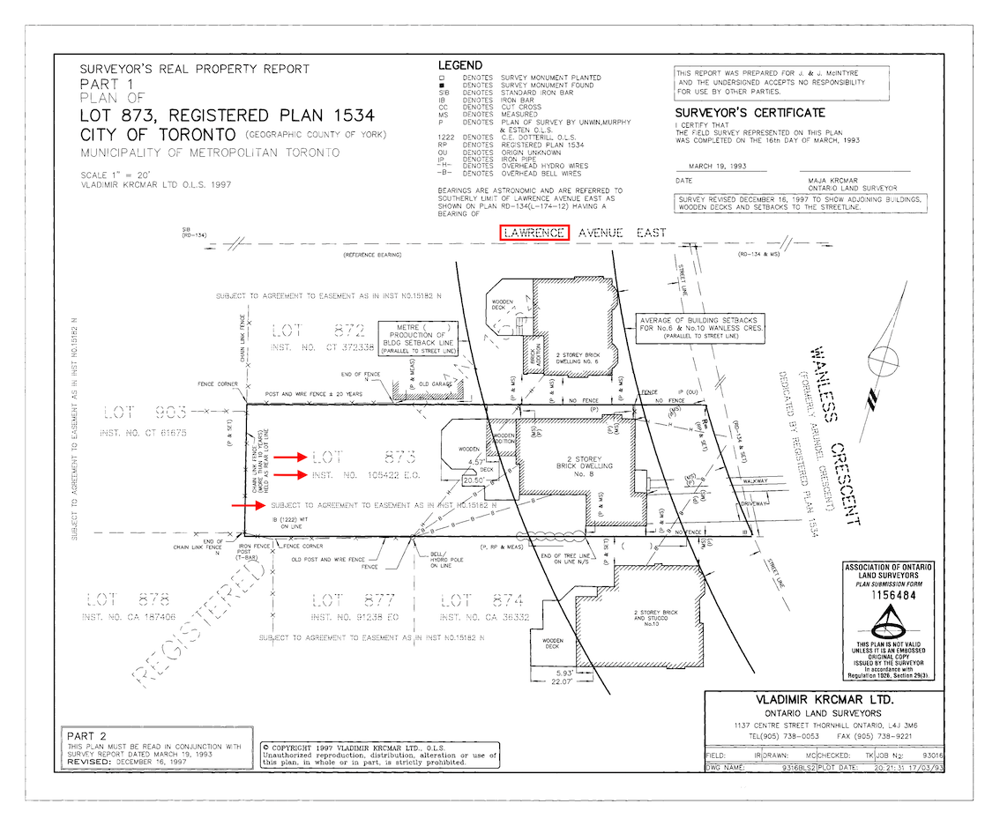
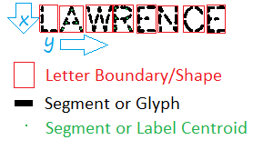

For many years the ability of computers to optically recognize characters (OCR) has been considered a solved problem. Computer models such as Tesseract and FastText can identify and label characters, words, sentences and paragraphs without difficulty with high reliability and accuracy. Currently these abilities are being extended to other non-Latin alphabets with Tesseract version 4.0. Moreover, it is well within the skill of a non-computer scientist (given enough patience) to train these techniques for new languages given enough example (i.e. training) data.
What has not been attempted (or at least published) is the recognition of stencil fonts that regularly appear in land survey plans. Here is an example:
What makes this font troublesome for OCR are the unique dashed '--' style of the font, and for all but the most labour intense letter boxing style training models, the vertical gaps present a real challenge since most OCR systems assume this is the start of a new character (in this project I'll use the term character interchangeably with letter (which can also include numbers)).
The principal objective is to recognize dashed stencil fonts and return a list of letters. So for the image above, a positive result is:
letters = ['L','A','W','R','E','N','C','E']
(One thing making the challenge easier is there are only upper-case fonts, lower-case are never used.) A secondary objective is identifying the fonts within the context of the drawing itself. Unlike OCR that uses images from scanned books, the survey plans have many other types of fonts plus drawing elements too (after all, they a plans where geometry is the central piece of information conveyed).
So, let's see a survey plan:

I've drawn a red box around "Lawrence" for easy identification, and also pointed out other stencil fonts of varying sizes. Note that rotated text recognition is beyond the scope of this project.
Here are the main concepts:
Let's have a look pictorially:

A segment or an entire letter has a 'shape' which is the range of its x and y dimensions. For image processing, x is vertical and y is horizontal (however, Tesseract does not follow this practise!).
A requisite objective of this project is to enhance my knowledge of Python and "Data Science"-like methodologies. Therefore, I did not use any advanced deep-learning models, but kept everything within a Python context. Specifically, here is what got things started:
import sys
print(sys.version)
3.6.8 |Anaconda, Inc.| (default, Dec 29 2018, 19:04:46)
[GCC 4.2.1 Compatible Clang 4.0.1 (tags/RELEASE_401/final)]
import numpy
numpy.version.version
'1.15.4'
import sklearn
sklearn.__version__
'0.20.2'
import pandas as pd
pd.__version__
'0.24.1'
from PIL import Image
Image.__version__
'5.4.1'
from scipy import ndimage
ndimage.__version__
'2.0'
import plotly_express as px
px.__version__
'0.1.7'
import seaborn as sns
sns.__version__
'0.9.0'
import matplotlib
matplotlib.__version__
'3.0.2'
import imageio
imageio.__version__
'2.5.0'
import pytesseract
pytesseract.get_tesseract_version()
LooseVersion ('4.0.0')
Always need sharp, well-defined images in single-band greyscale to start things off.